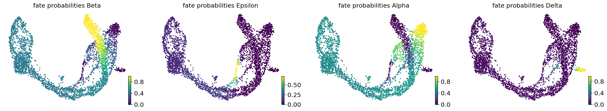
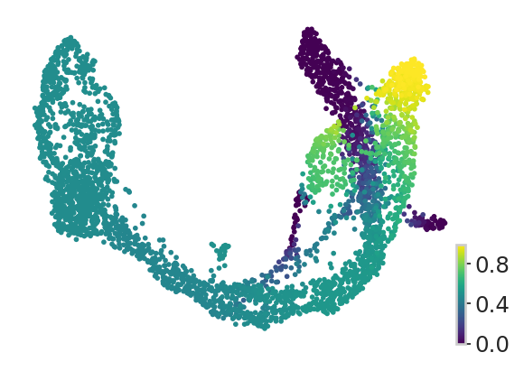
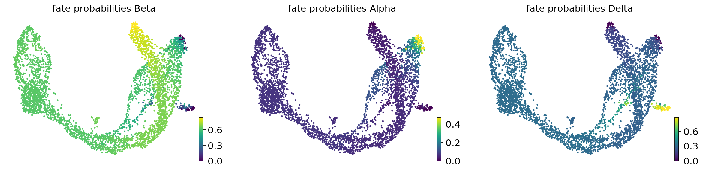
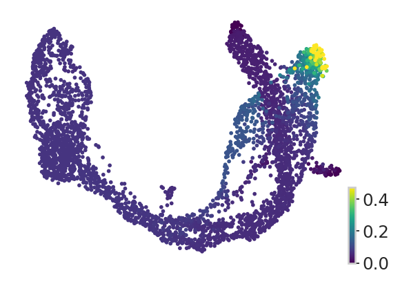
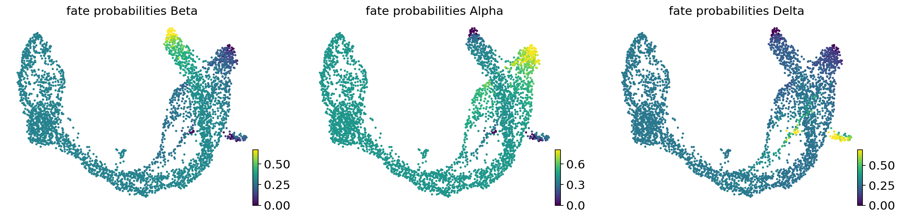
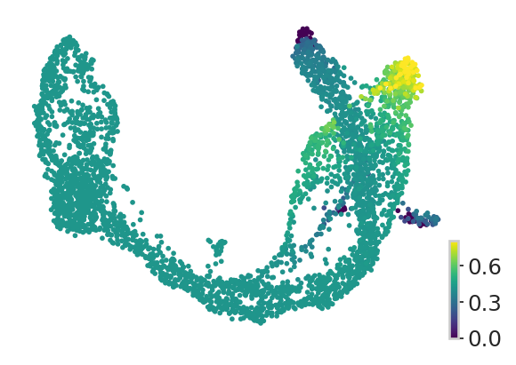

Pancreatic endocrine cell fate analysis#
Notebooks for analyzing pancreatic endocrine cell fate decision
Library imports#
import numpy as np
import pandas as pd
from scipy.stats import ranksums
import matplotlib.pyplot as plt
import mplscience
import seaborn as sns
import cellrank as cr
import scanpy as sc
import scvelo as scv
from rgv_tools import DATA_DIR, FIG_DIR
/home/icb/weixu.wang/miniconda3/envs/regvelo_test/lib/python3.10/site-packages/anndata/utils.py:429: FutureWarning: Importing read_csv from `anndata` is deprecated. Import anndata.io.read_csv instead.
warnings.warn(msg, FutureWarning)
/home/icb/weixu.wang/miniconda3/envs/regvelo_test/lib/python3.10/site-packages/anndata/utils.py:429: FutureWarning: Importing read_excel from `anndata` is deprecated. Import anndata.io.read_excel instead.
warnings.warn(msg, FutureWarning)
/home/icb/weixu.wang/miniconda3/envs/regvelo_test/lib/python3.10/site-packages/anndata/utils.py:429: FutureWarning: Importing read_hdf from `anndata` is deprecated. Import anndata.io.read_hdf instead.
warnings.warn(msg, FutureWarning)
/home/icb/weixu.wang/miniconda3/envs/regvelo_test/lib/python3.10/site-packages/anndata/utils.py:429: FutureWarning: Importing read_loom from `anndata` is deprecated. Import anndata.io.read_loom instead.
warnings.warn(msg, FutureWarning)
/home/icb/weixu.wang/miniconda3/envs/regvelo_test/lib/python3.10/site-packages/anndata/utils.py:429: FutureWarning: Importing read_mtx from `anndata` is deprecated. Import anndata.io.read_mtx instead.
warnings.warn(msg, FutureWarning)
/home/icb/weixu.wang/miniconda3/envs/regvelo_test/lib/python3.10/site-packages/anndata/utils.py:429: FutureWarning: Importing read_text from `anndata` is deprecated. Import anndata.io.read_text instead.
warnings.warn(msg, FutureWarning)
/home/icb/weixu.wang/miniconda3/envs/regvelo_test/lib/python3.10/site-packages/anndata/utils.py:429: FutureWarning: Importing read_umi_tools from `anndata` is deprecated. Import anndata.io.read_umi_tools instead.
warnings.warn(msg, FutureWarning)
General settings#
plt.rcParams["svg.fonttype"] = "none"
sns.reset_defaults()
sns.reset_orig()
scv.settings.set_figure_params("scvelo", dpi_save=400, dpi=80, transparent=True, fontsize=14, color_map="viridis")
Constants#
DATASET = "pancreatic_endocrinogenesis"
SAVE_DATA = True
if SAVE_DATA:
(DATA_DIR / DATASET / "results").mkdir(parents=True, exist_ok=True)
SAVE_FIGURES = True
if SAVE_FIGURES:
(FIG_DIR / DATASET).mkdir(parents=True, exist_ok=True)
TERMINAL_STATES = ["Alpha", "Beta", "Delta", "Epsilon"]
VELOCITY_METHODS = ["regvelo", "velovi", "scvelo"]
N_STATES = [7, 10, 10] # optimal states learned from `3_comparison_TSI`
Data loading#
Using CellRank pipeline for fate mapping#
for _idx, (n_state, method) in enumerate(zip(N_STATES, VELOCITY_METHODS)):
adata = sc.read_h5ad(DATA_DIR / DATASET / "processed" / f"adata_run_{method}.h5ad")
vk = cr.kernels.VelocityKernel(adata).compute_transition_matrix()
ck = cr.kernels.ConnectivityKernel(adata).compute_transition_matrix()
estimator = cr.estimators.GPCCA(0.8 * vk + 0.2 * ck)
estimator.compute_macrostates(n_states=n_state, cluster_key="clusters")
estimator.set_terminal_states(
list(set(estimator.macrostates.cat.categories.tolist()).intersection(TERMINAL_STATES))
)
estimator.compute_fate_probabilities(solver="direct")
estimator.plot_fate_probabilities(same_plot=False)
if method == "regvelo":
fate_prob = estimator.fate_probabilities
sampleID = adata.obs.index.tolist()
fate_name = fate_prob.names.tolist()
fate_prob = pd.DataFrame(fate_prob, index=sampleID, columns=fate_name)
with mplscience.style_context():
fig, ax = plt.subplots(figsize=(4, 3))
sns.set_style(style="whitegrid")
estimator.plot_fate_probabilities(states=["Alpha"], same_plot=False, title="", ax=ax)
if SAVE_FIGURES:
fig.savefig(
FIG_DIR / DATASET / f"alpha_cell_{method}.svg", format="svg", transparent=True, bbox_inches="tight"
)
plt.show()






{kind=link}
{kind=link}
[0]PETSC ERROR:
WARNING: The following terminal states have different number of cells than requested (30): {'Ngn3 high EP_1': 25}
{kind=link}
{kind=link}
[0]PETSC ERROR:
WARNING: Using `10` components would split a block of complex conjugate eigenvalues. Using `n_components=11`
[0]PETSC ERROR: ------------------------------------------------------------------------
WARNING: Unable to compute macrostates with `n_states=10` because it will split complex conjugate eigenvalues. Using `n_states=11`
WARNING: The following terminal states have different number of cells than requested (30): {'Ductal_2': 23}
{kind=link}
{kind=link}
Identify Epsilon’s subpopulstions#
adata.obs["Alpha"] = fate_prob.loc[:, "Alpha"]
Epsilon = adata[adata.obs["clusters"] == "Epsilon"].copy()
## calculate pca and plot umap
sc.tl.pca(Epsilon)
sc.pp.neighbors(Epsilon)
sc.tl.leiden(Epsilon)
sc.tl.umap(Epsilon)
scv.pl.umap(Epsilon, color="leiden", legend_loc="on data")
{kind=link}
scv.pl.umap(Epsilon, color="Alpha")
{kind=link}
Identify differential expressed TF among two populations#
## screening TF, identify the driver
TF_list = adata.var_names[adata.var["tf"]]
pval = []
for i in TF_list:
x = np.array(Epsilon[Epsilon.obs["leiden"] != "2", i].X.todense()).flatten()
y = np.array(Epsilon[Epsilon.obs["leiden"] == "2", i].X.todense()).flatten()
_, res = ranksums(x, y, alternative="greater")
pval.append(res)
res = pd.DataFrame({"TF": list(TF_list), "Pval": pval})
res = res.sort_values(by="Pval")
res
| TF | Pval | |
|---|---|---|
| 35 | Irx1 | 0.001671 |
| 62 | Pou6f2 | 0.003126 |
| 44 | Meis2 | 0.011591 |
| 17 | Fev | 0.027347 |
| 36 | Irx2 | 0.086176 |
| ... | ... | ... |
| 1 | Arx | 0.998394 |
| 20 | Foxa2 | 0.999690 |
| 21 | Foxa3 | 0.999846 |
| 66 | Rfx6 | 0.999997 |
| 50 | Neurog3 | 1.000000 |
81 rows × 2 columns
Visualize DEG#
cell_states = np.array(Epsilon.obs["leiden"].copy())
cell_states[cell_states == "2"] = "State 1"
cell_states[cell_states != "State 1"] = "State 2"
Epsilon.obs["cell_states"] = list(cell_states)
## Visualize gene expression dynamics
with mplscience.style_context():
markers = ["Pou6f2", "Irx1", "Smarca1", "Arg1", "Hes6", "Neurog3"]
fig, ax = plt.subplots(figsize=(4, 3))
# sns.set_style(style="whitegrid")
sc.pl.dotplot(Epsilon, markers, groupby="cell_states", swap_axes=True, dot_max=0.8, ax=ax)
if SAVE_FIGURES:
fig.savefig(
FIG_DIR / DATASET / "feature_marker_expression.svg", format="svg", transparent=True, bbox_inches="tight"
)
plt.show()
{kind=link}